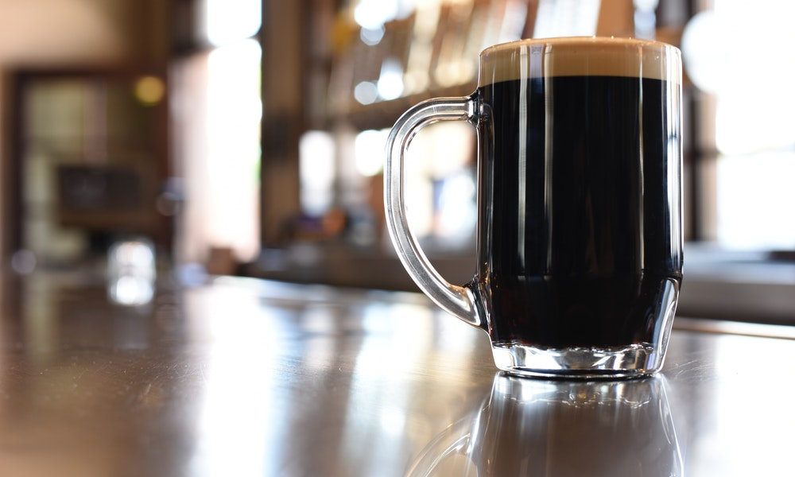

NACIONALIDADE // STOUT
CARACTERÍSTICAS // Coloração escura, cevada e maltes tostados e espuma cremosa.
HARMONIZAÇÃO // Carnes grelhadas, queijos e sobremesas com chocolate ou frutas.
INGREDIENTES // Água, malte, lúpulo, cevada, açucar e corante.
Descrição
A cerveja Stout é de alta fermentação, portanto pertencente à família Ale, que possui como característica marcante o elevado nível de tosta dos maltes usados em sua produção, que ficam evidenciados no seu aroma, no seu sabor e na sua coloração muito escura.
Onde encontrar?

MAMBEMBE BAR
EndereçoR. Gen. Lima e Silva, 594 - Loja 5 - Cidade Baixa, Porto Alegre - RS